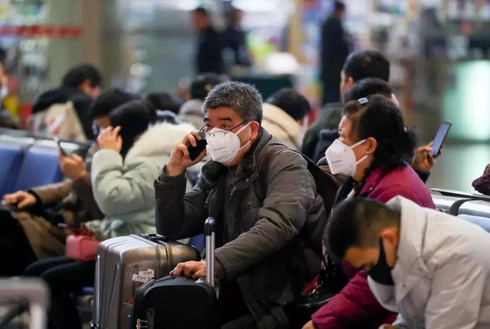

滞留在武汉，我们想回家
原文链接 备份链接 有武汉人滞留在外地，就有外地人滞留在武汉。 1月23日凌晨，武汉宣布封城。 2月10日，湖北省以外的地区陆续开工，这让滞留在武汉的人更希望知道出城的日期。 恰值人口高峰流动期，没有数据统计滞留在武汉的人到底有多少。但各 …
_
_
_
_
导语:
武汉疫情发生后，牵动人心。它是中国自SARS以来最严重的公共卫生事件，也是我们这代人不可遗忘的记忆。疫情期间，微思客将开启“疫情”专题，诚邀各位专家及读者来稿，我们会定期更新优质稿件，这些记录都将成为历史的一份见证。
今天所推这篇文章的作者曾是微思客的一员，想把ta的经历分享给各位。希望可以让更多人听到普通人的声音！
_
_
_
_
作者丨升，一个普通人
我是这片国土里，看似离疫情最远的那批人：从未到过湖北，生活在北方，没有武汉朋友，对疫情稍有认识已经是1月20号以后了。
但是覆巢之下安有完卵，我想记录下现在微不足道的经历，给每一个卷入2020的人看。
12月末，我和朋友正在计划去韩国跨年，我妈发来一个网上的帖子，说武汉有SARS，我随即在网上找了辟谣帖，安慰了她。
我们在韩国呆了一周左右回国。首都机场没有人戴口罩，密集的人群预示着即将到来的春运。我们还在计划着周末一起去泡汤、甚至想在离京前再去看场脱口秀。
还好因为工作繁忙，一切未能成行。当时的最大新闻还是故宫大G，吃完瓜就在网上买年货，刷到过口罩的闪购，但是比起来坚果，“口罩”怎么会是年货必需品呢。
情况到了1月20日一切都不一样了，新闻突然爆出来武汉疫情，我妈打电话给我叫我务必出门戴口罩。我想起来去年她留给我的医用蓝口罩，搬家时候都扔了，就只好先去药店买口罩，好像是从那时候才开始意识到了问题的严重性，北京六环的药店一夜无货，我导航到一家很偏的小药店，店员说只有这种的了：
没有标识，没有外包装的几个“n95”散装放在桌上，我转头走了。那时候怎么会想到，这种三无产品也会买不到了呢？
我开始在网上买N95，由于缺乏足够多的信息，导致我只想买3M 1860，当然那种是没有货的。有几家当时还在卖霍尼韦尔的防雾霾系列，我看了下价格，平时99块钱25个，他们卖到了160块钱，“哄抬物价，国家会管的”竟然是那时候26岁的我，心里的想法，真的不是差这几十块钱，只是觉得“信任xx会让物价回到正常水平”，于是我也没有买那些口罩。
1月22日晚上，情况严峻了起来。我在公司同事那里买了几个n95，打算晚上坐火车回家的时候用。还有一个小插曲：打了一辆滴滴从公司到家，司机在咳嗽并且没戴口罩，我没好意思叫他带个口罩，而是叫他把所有的窗户打开，祈祷流通的空气让我安全。
晚上朋友要送我去火车站，我们还吃了一顿海底捞。服务员没有戴口罩，我问，你什么时候回家？服务员说，春节期间不休息。
吃完饭，那个夜晚我们没有地方去，就在街上转了一圈又一圈。几家酒吧打了烊，三里屯的墨西哥餐吧里走出来几个戴口罩的外国人，手里拖着行李箱，仿佛世界末日。
车停到一个24小时便利店，里面就店员一个人在忙。我在狭小的店内转了几圈，没有口罩，但是有消毒液，但我只买了在火车上要喝的饮料和零食。
凌晨，我们奔向北京南站，空无一人的街道不知道是因为节前返乡还是因为惶恐不安的新闻，变得可怖。路笔直地往前延伸，仿佛通向一个黑洞般的未来。
到了火车站，我没敢在候车室里待着，两个人在车里呆到了我的车快要检票才出门。直到坐到火车上，我才有一丝丝的真实感：我要回家了，我只有一个口罩，我像是个壮士在赴死。

武汉火车站候车大厅，戴着口罩的旅客在候车。（图源：中新社）
一夜未睡，反复刷着新闻，迷迷糊糊间抢了几单天猫超市的口罩，以为万事大吉。
早上爸爸来接我，我责令他必须戴好口罩。我不想有任何1%的可能性。回到家，妈妈也没有给我消毒，忍不住抱了抱我。我们不知道这件事有多严重，病毒会以什么形式传播，一切信息少的可怜。
化妆包里放了粉底液，走之前的我，还想着大年初一约朋友去看电影。没想到在家一呆就是15天。
我是这个时代最微小的存在，跟湖北离得无比遥远。最近的一次，只是我的实习生是武汉人，1月20号就退了回家的车票，本来转去重庆奶奶家过年，没想到最终只能在北京过了一个人的春节，年夜饭是自己煮的面条，在群租房里看着万家灯火，还要为家乡的亲人担心。
一个重庆的朋友也留在了北京，年夜饭是在每日优鲜买了一袋速冻饺子。1月23号那天的飞机票她忍痛退掉了，隔天就出了政策退票费全免。
我在老家的头几天，被零下30几度的天气冻得有些感冒了，妈妈贴在我的额头上，和爸爸默念怎么办。我转过去，祈祷千万不要有那么一点点的可能性。
公司很快下发了延迟上班的决定，从3号，到10号，再到未定。北京的形势比想象中严峻。没人知道什么时候停止，就像没人知道为什么开始，到底是怎么开始，又为什么变成现在这个局面。
因为讲真话的人被批评，想知道真相只能借个梯子。那些绝望跳桥的人，追着灵车喊妈妈的人，死在岗位的人、一家都被感染的人，在阳台敲锣的病人……成为这个大时代的注脚，终究会被遗忘、且反复地遗忘。
我一直觉得不要用别人的不幸来衬托自己的幸运。但是随意地表达悲悯何尝不是一种残忍。只能身临其境地想到，如果在那个城市里，在每个封闭的单元门里，门外是看不见摸不到的死神，那么该有多么的无助。
这种无助扩散到14亿人的头上，分担下来竟然也这么沉甸甸的。几个商家说政府征用了口罩，所以无法发货；买不到的消毒液，买不到的护目镜…..媒体一会儿说这个有用，一会儿说那个也是必须，像溺水的人一样抓住一根稻草，竟然是双黄连。

那天工作群里同事发了人民日报的文章，我立刻就去抢购了双黄连，甚至有一种幸运感：我第一次抢到“物资”。后来这件事被我朋友耻笑了很久，她觉得我这样受过教育的人竟然还会被“谣言”诓骗。
但是真的没得选择，那个时间，看到人民日报、在淘宝看到全部售罄，你可能很难控制住自己，你不想再错过了，其实你在表达我不想死。
这是最普通的人的想法，遭人利用则是一种必然结果。隔天我退掉了所有的双黄连。
这件事以后我在想，这个病毒很可怕吗？会得上以后24小时就会死吗？所有研究证明不会。但是为什么我们还这么怕？我们小区为什么封禁了？
是来源一种未知：
你不知道你出门遇到的人是什么人，他知不知道自己身上带着这种病毒，还出来乱晃。
你不知道你被隔离的时候会不会有基本的生活保障，买到的大白菜是6毛钱，还是60块钱。
你不知道你生病了，有没有足够的资源去治疗，在医院能不能求得一张床位。
你不知道在这个期间，你的人生会有什么巨变，是治疗后身体上的反应，还是病毒会彻底摧毁掉你。
是的，有些问题新闻给了答案，但是是真的吗？真的吗？作为普通人，我每天都在打开cctv13，但是他们说的每句话，我都存疑。
每天爆出的数据是真的吗？还是“计划性”地确诊、疑似、死亡。
专家组的话和人民日报的话，谁是谣言？
对火车票和复工的政策，一变再变，谁在决定退票免费、谁会突然发布延迟的决定？是什么样的人在统筹全局？是什么时候能有口罩可以买？为什么说真话的人会死？又为什么微信里、微博里“不可查看”？说什么可以，说什么又是不可以？
那么现在，很多人都想知道答案。
延伸阅读：
新型冠状病毒是否构成「国际公卫紧急事件」？| 微思客·疫情专题
编辑：西西弗斯先生
_
_
_

wethinker2014@163.com
微思客重视版权保护，本文首发于微思客，如需转载，请联系微思客团队。

微思客wethinker
微信扫一扫赞赏作者 赞赏
长按二维码向我转账
受苹果公司新规定影响，微信 iOS 版的赞赏功能被关闭，可通过二维码转账支持公众号。
原文链接 备份链接 有武汉人滞留在外地，就有外地人滞留在武汉。 1月23日凌晨，武汉宣布封城。 2月10日，湖北省以外的地区陆续开工，这让滞留在武汉的人更希望知道出城的日期。 恰值人口高峰流动期，没有数据统计滞留在武汉的人到底有多少。但各 …
原文链接 备份链接 普通人的个人记述，即使其中夹杂着恐惧和不安，也能通过这种熟识感带给人心以安慰，我们可以通过它指引的熟悉的路径，在这场危机中找到自己身心的避难所。 全文4871字，阅读约需9.5分钟 当疫情降临时，每个人都被迫卷入其 …
原文链接 备份链接 几位口罩行业的从业者，都是在大量微信、电话疯狂轰炸的间歇，接受我们采访的。所有人的语速都异常急促——在过去的一周时间内，他们接过工信部、各地应急办、市级政府的电话；也接过各省医院、药店、大小代理商的电话；还有从未打过交 …
原文链接 备份链接 🎧 点击上方图片，跳转「故事FM」小程序，收听真人讲述。记得添加「我的小程序」，一键收听全部故事哟！ 本来在春节前的最后一期节目里，我预告说 故事FM 会放假一周，节后回来再见。 但是这个春节啊，我们团队都无心过年，大 …
原文链接 备份链接 非常时期，武汉成了全国人民挂念、祈福的城市。封城后，武汉人民的真实生活是什么样？ 正和岛自1月26日起特别推出《叶青：我在武汉疫区的第N天》专栏。叶青是一位定居武汉40年的市民，也是一名学者和官员。接下来的一段时间， …